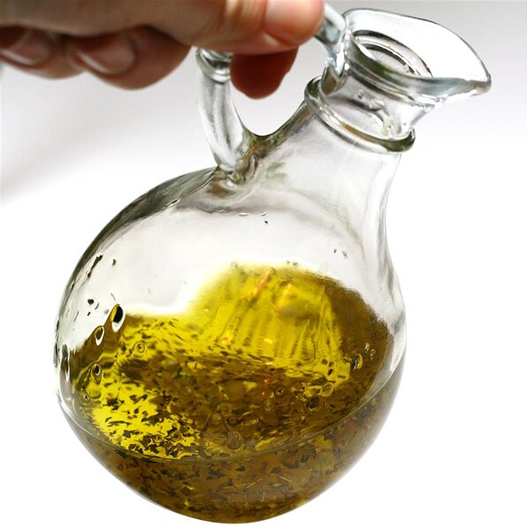

Single Parent Pasta

Description
Single Parent Pasta is exactly what to make when all you have is olive oil,
pasta, and some spices. Nonetheless, this is very tasty, filling, and requires very little
oversight. Let's begin.
Ingredients
- Pasta noodles of choice (penne recommended)
- Olive oil
- Salt
- Black pepper
- Garlic powder
- Paprika
- Basil
- Oregano
Steps
- Pour water in a pot and set to boil. In another pan, cover the bottom with olive oil. Set to medium-low heat.
- Add spices to olive oil. Start with a little of everything, then taste. Add more of whatever you think would make it taste better.
- If you have any bacon or sausage, you can slice that thinly and add to the olive oil. Stir.
- When pasta is done, strain. Put in bowl, and spoon seasoned olive oil over.
- If you have any capers, parsely, or shredded cheese, garnish now to taste.
- Enjoy!